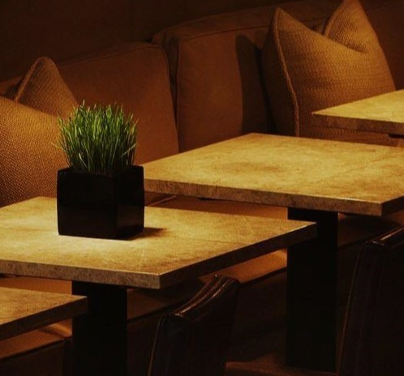

About us.
Seasonal Taste typically refers to an establishment that serves cuisine inspired by European or American culinary traditions.
- Seasonal Taste News Magazine is the authoritative voice of the foodservice industry in Western Canada.
- Trend-setting operations as well as full course features on current industry issues from Seafood to Glassware.
With an in-depth circulation covering QSR, Casual Family, Multi-Unit and White Tablecloth dining, our "In the West, for the West" approach is refreshing, educational and informative.